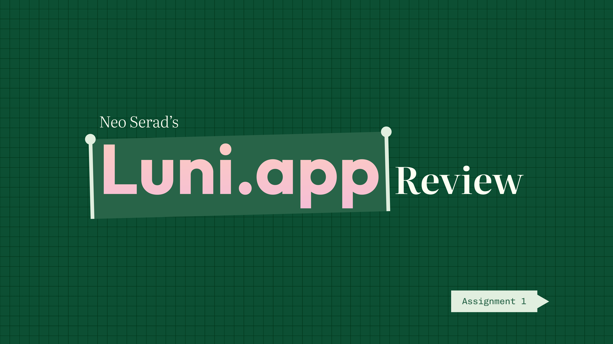
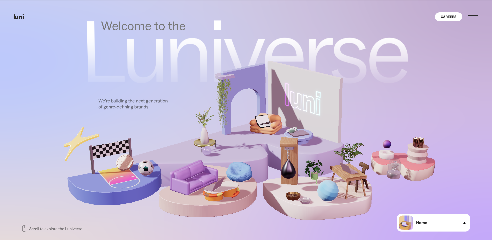

What stood out to me most prominently upon first impressions was that the entire website experience remained playful throughout. The website utilised bright, contrast-heavy, fun colourways which work in tandem with the interactive 3D homepage.
Luni clearly spent a lot of time addressing their motion identity as not only are the 3D elements interactive and carry movement, but so to do the typography, images, and icons seen elsewhere on other pages. These are of course complimented by a bold modern sans-serif typeface.
Across the two minutes I found myself hovering over each homepage item to see what 3D animation would activate upon hover and touch. I also primarily used the hamburger menu to move from one section of the website to the other when accessing different webpages. I would pause and inspect hero images that filled the width of the page as I felt like they deserved my attention.
Finally, I went through all the listed employee benefits out of curiosity as I couldn't see them from a glance due to it being a required interaction to open the corresponding drop-down menus.
I actually ended up staying longer on sections of a page that included continuous or constant movement, whether that was 3D objects moving or text scrolling past without stopping. I was also more engaged on sections of a page that responded to user touch and motion as my eyes were naturally drawn to these animated elements.
I also found myself surprisingly interested in reading text that wasn't immediately available for viewing and instead required a prior action to view such as the drop-down menus and text boxes that would change on click.
Scrolling and hovering where my most common actions during the initial two minute interaction.
Scrolling is how the user is able to access the full content of the pages and view the corresponding motions that matches a user scrolling reactively. This is a great way to change an otherwise mundane web feature into something that the user wants to repeatedly do to to see how the website reacts to this particular behaviour.
After the emphasis on animated sequences on hovers on the homepage, it motivated me to see what other aspects of the website would react to hover. This led to me seeing several elements that had animations responding to hovering. specifically because this detail was established on the homepage. It informs the user upfront that this is the extent of detail that can be expected throughout the website.
As I have done a lot of browsing on creative studio websites and their portfolios before, I had a preconceived notion of what to expect after understanding that this was the context of Luni.app. Whenever I go onto a studio website I always imagine the website’s primary goal is to appeal to potential client, in hopes they will browse their website and understand what type of brands and products they design for.
However, I think Luni is more focused on instead trying to appeal to employees and potential new hires or interns. They still do showcase a sort of company portfolio, however the focus seems to definitely be pointed towards promoting their work life culture, physical studio spaces, existing team of employees, and employment benefits in attractive ways. It very much feels like they are trying to get the user to work for them, not with them.
As the website utilises very creative and motion heavy interactive elements, it definitely does not intend to appeal to a mass general audience. Instead, it narrows their focus to creatives who will be much more appreciative and observant of their efforts. This can be seen especially with the fun mini interactions with the 3D miniatures as a very minute but high effort detail.
They also take some strides in subverting the user expectations. Instead of hiding details away behind a contact form or expression of interest, they uphold a company transparency, showing off employee benefits and flexibility as public divulged information. Of course, this does not stop Luni from showcasing their working spaces and employees through a visually idyllic, bright, and vibrant lens.
The website very much feels like a caterers for a one-time visit and confidently leans towards short term engagement. I think this is done intentionally as even if a user is on the website for a short amount of time, the level of quality and density of detail makes up for this short duration of engagement. Where this may differ is if the user is a designer looking for work and is interested in applying to Luni, in which they may visit the website repeatedly to double check information such as the company benefits and projects.
I can't imagine much would be routinely changing in regards to the content of the website itself. The exception to this would be if Luni had a new work they were willing to publicly showcase in their portfolio. This may involve adding a new tab with a unique 3D landing page to their website, dedicated to explaining the process of that work.
The website provides virtually no mechanisms or features to entice the user to return to the site. This is most evident through the fact that if you were to refresh the website, there isn't any user cache saved from the previous visit to try and personalise your experience with the website as a returning user.
The obvious comparison that can be made is the videogame-esque homepage with hidden 3D interactive features which can directly be linked to the nature of Easter eggs inside video games. Other than that Looney is still very reminiscent of many other clean sleek modern creative studio pages that exist on a larger scale of awareness such as buck.co, neversitstill.com, and vucko.co.
As this is the website of a creative studio, it takes great effort in trying to encourage users to view and interact with any and all the website features to convey their company’s values of playfulness and curiosity. This is why the website is inundated with small details and responsive touch points for the user to stop and interact with; to digitally smell the roses.
If a creative is able to discern the level of detail and effort put into the website, it can have a direct impact on their perception of the studio, generating appeal to Luni as a place of employment. The game-inspired interactions present a fun, yet professional tone, presenting the companies aesthetic as a hybrid of those two feelings. The user should feel both amused and impressed.
The most frustrating part is by far the technical performance as slower computers will struggle to render the 3D graphics in real time on top of the animations that occur reactively. This makes a difficult for users to navigate to important information such as company benefits, values, portfolio projects etc to their credit. Additionally, the website looks more visually cramped on mobile as many of the 3-D scenes are originally fitted for landscape viewports.
This could be an matter of intentional exclusion, as I suspect they are catering to professional creatives that would have the capable hardware to view a website such as this.
The most satisfying part is the continuous smooth motion identity that remains present throughout every interaction, communicating the level of detail Luni goes to when building a brand image and mood for the viewer.